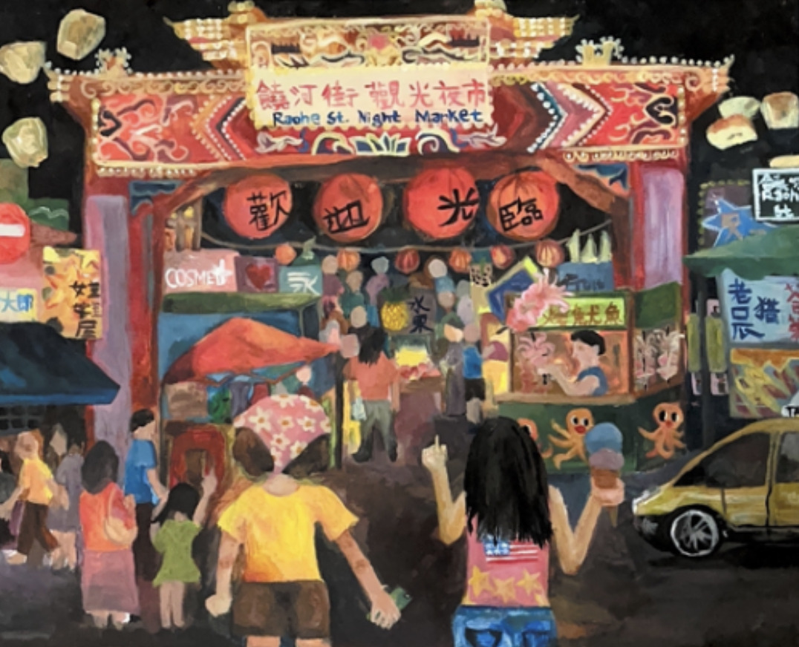

Art Introduction
Think of this as the gallery wall inside Cafe Jamie filled with pieces I've created; stroll and browse along!
Featured pieces

Daydreams at Work
Colored Pencil on Paper · 11" × 14"
Working as a clinical assistant at an orthodontist’s office, I have witnessed firsthand the powerful impact one’s outward appearance can have on self-esteem. As patients undergo phases of teeth alignment, I observe not only the transformation of their teeth but the way that they carry themselves; from fearing the thought of showing their teeth to growing towards a full grin.
Healthy teeth and a renewed sense of confidence form a combined synergy emanating from the patients, inspiring me to look out for and boost the emotional health of those around me in my own endeavors.

Model Minority
Acrylic on canvas · 11" × 14"
The model minority myth–placing an ethnic group into a stereotypical mold of high achievement and assimilation—has served as the scapegoat for educational as well as socioeconomic debates within American society and government.
The wedge created between various racial groups has contributed to not only the uneven distribution of social, health, and financial resources, but emotional and social well beings. In order to truly progress as a society, we must dismantle the toxic homogenous narratives assigned to racial and religious groups and recognize the multifaceted stories that make up America’s diversity.

Summer Trip
Acrylic on canvas · 16" × 20"
A cultural melting pot, night markets frequently feature street food vendors originating from a variety of East Asian cuisines. An embodiment of cultural and ethnic diversity, they are representative of the greater idea of crossing borders of race, language, and age in a communal setting.
Standing at the towering lighted doorway of the Raohe Street Night Market with my sister—a treasured place of retreat near my grandparent’s Taipei apartment—I await to explore the intersection of my own American and Taiwanese backgrounds.

Her Own World
Acrylic on canvas · 16" × 20"
Her heart was pounding, sweat beaded on her forehead, and she felt
deathly sick; others were watching again. She felt like she was shut
inside a cage, the others unable to hear her over the background of
chirping birds. What were others thinking? Judging?
It was then she realized that it was not the noise of feathered
creatures, but her own fear in her ears and social anxiety trapping her
in. Why had she lived solely for the gaze of others? Now she knew: it was time to let go and escape; she did not want to be
a songbird to be admired anymore.